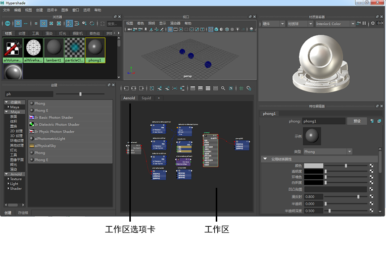

在 Hypershade 工作区中创建节点并构建着色器网络。工作区是位于 Hypershade 底部的面板，在“创建”(Create)选项卡和特性编辑器之间。Hypershade 工作区与节点编辑器类似，允许您执行以下操作：
- 通过单击“创建”(Create)选项卡中的节点“创建节点”(Create nodes)。或者，也可以单击 Tab 键，然后输入节点的类型，或者将节点从“创建”(Create)选项卡拖放到工作区。
- 通过拖动连接线，或者通过使用快捷方式（如使用鼠标中键将节点拖动到其他节点上）来连接节点。
- 可以在与节点编辑器中相同的视图模式下显示节点：简单模式、已连接模式、完全模式和自定义模式。在 Hypershade 中，在创建节点时，这些节点默认情况下在自定义模式下显示。
- 通过单击工作区工具栏中的
 以显示节点的搜索字段，搜索节点中的特定属性（或者过滤出属性）。
以显示节点的搜索字段，搜索节点中的特定属性（或者过滤出属性）。
- 通过单击鼠标右键并从标记菜单的“显示 > 对象”(Show > Objects)子菜单中选择要包括的节点类型，从图表中过滤出节点类型。默认情况下，将显示摄影机、着色组和着色节点。
也可以在工作区工具栏的过滤器字段文本框中按名称过滤节点。使用 * 作为通配符。

若要清除过滤器，请单击
 。如果未应用过滤器，则图标显示为灰色的
。如果未应用过滤器，则图标显示为灰色的  。
。
- 创建多个选项卡，并在每个选项卡中绘制不同的网络。
单击最右侧选项卡旁边的 + 号以创建新选项卡。右键单击任何选项卡以显示其“关闭选项卡”(Close Tab)、“复制选项卡”(Duplicate Tab)和“重命名选项卡”(Rename Tab)菜单选项。使用鼠标左键或中键拖动可对选项卡重新排序。
在关闭 Hypershade 时和保存文件时，选项卡保持不变。
- 使用工具栏选项编辑着色器图表，如将选定节点添加到图表，重新排列图表等。Hypershade 和节点编辑器共享大多数的工具栏选项。
- 通过单击工作区工具栏中的
 ，打开和关闭栅格背景。通过单击
，打开和关闭栅格背景。通过单击  ，将节点捕捉到栅格。
，将节点捕捉到栅格。
注： 可以在“Hypershade 首选项”(Hypershade Preferences)中为节点显示、视图模式和栅格捕捉行为设置默认值。
